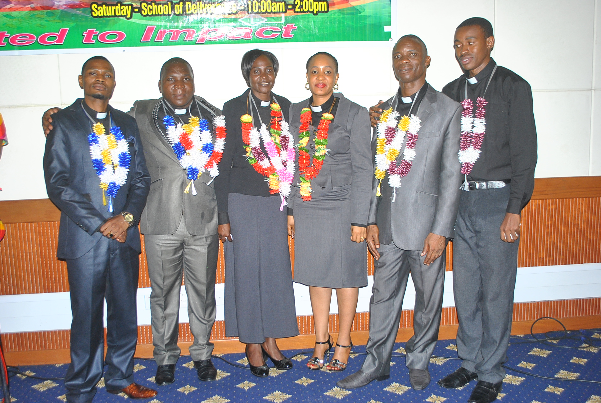

F. book
F. book Twiter
Twiter YTB
YTBMpango mkakati wa kanisa la W.L.M.
Huu ni mpango mkakati wa kanisa la neon la uzima (W L M). mpango mkakati huu umeandaliwa kwa mara ya kwanza baada ya usajili kukamilika mwaka 2022. Mpango mkakati huu umeandaliwa na kamati kuu ya kanisa ikiongozwa askofu mkuu ambaye pia ni mwangalizi mkuu wa kanisa la neon la uzima. Viongozi walioshiriki kuandaa mpango mkakati ni askofu mkuu (mwangalizi mkuu), mwangalizi msaidizi, katibu mkuu, muhazini mkuu, muhazini msaidizi, pamoja na wakuu wa idara, wataalamu wa mipango ili kuleta mikakati inayo tekelezeka bila hofu wala mashaka yeyote. Huu ni mpango mkakati wa miaka 12 wenye mgawanyiko wa miaka mitatu mitatu katika utekelezaji.kila kilichomo humu kwenye mkakati kimejadiliwa kwa ufanisi mkubwa ili kuleta tija katika usimamizi na utekele...zaji.
Tunatanguliza shukrani zetu za dhati kwa mungu na kwa wote walioshiriki kimwili na kiroho katika uandaji wa mkakati huu wa mipango ya maendeleo itakayo tekelezwa ndani ya miaka 12, Mungu awabariki sana. Mpango mkakati huu umeandaliwa makao makuu ya kanisa la neon la uzima mkoani Dar es salaam Tanzania kwa muda miezi
6. Mpango mkakati huu utaanza rasmi kutumika mwaka 2023 hadi 2035. Mchakato wa kukamilisha mpango mkakati huu ulizingatia maoni, ushauri na mapendekezo ya watendakazi wa kanisa bla neon la uzima pia maombi ya mfungo pia yalihusika ili kuweza kufanikisha mpango mkakati huu.
2. MPANGO MKAKATI WA KUTEKELEZWA NDANI YA MIAKA 12
Mikakati iliyowekwa ndani ya mpango mkakati wa kutekelezewa ndani ya miaka 12 umegawanyika katika mipango mikakati midogo midogo kama ifuatayo;
1. MPANGO MKAKATI WA KUBORESHA IBADA BINAFSI NA YAPAMOJA.

1:1 Ibada kurushwa hewani Mpango mkakati wa neon la uzima ni kuwa na runinga pamoja na vituo vya redio kitakacho kuwa kinarushwa ibada zetu ili neon la Mungu liwafikie watu katika jamii mbalimbali na wafikrie habari ya toba, wagonjwa wa maeneo mbalimbali waombewe na kupata uponaji. 1:2 kuwa na ibada za kusifu na kuabudu Mpango mkakati huu utasaidia kuvuta uwepo wa Roho mtakatifu kwa maana Mungu wetu pia huketi katika sifa. Uwepo wa ibada za kusifu na kuabudu itasaidia kuwa na kiwango kikubwa cha ibada ndanio yao. 1:3 kuhakikisha watu wengi wanashirika katika maombi. Katika mkakati huu kanisa litahakikisha watu wanashiriki vipindi vya maombi na makambi ya maombi kama neon la Mungu linavyo sema ombeni bila kukoma hii ni kuhakikisha kanisa linakuwa hai na watu wanakuwa na hofu ya Mungu. 1:4 kuwa na vyombo bora kwa ajili ya injili Mpango huu utasaidia kuhubiri na kupeleka injili maeneo mbalimbali. Vyombo vya kutumia kueneza injili maeneo mbalimbali ni kama vile, vyombo vya muziki.
2. MPANGO MKAKATI WA KUFUNGUA MATAWI MIKOA YOTE TANZANIA

2:1 Ongezeko la washirika kutoka 550 hadi 6600 mwaka 2035. Katika kufanikisha mpango mkakati huu tutatumia mbinu ya kutangaza injili ndani ya kanisa na nje ya kanisa na kuhakikisha watu wanaokoka na kumjua Mungu kikamilifu na hatimaye kuwa na washirika wengi ndani ya kanisa la neno la uzima na kuweka matawi maeneo mbalimbali. 2:2 kuongeza idadi ya wachungaji watakao saidia kuchunga kanisa. Ili kufanikisha mpango mkakati wa kuongeza matawi ya kanisa la neon la uzima (W L M), nilazima kuwepo na wachungaji wa kutosha. Ndani ya miaka mitatu tutahakikisha walau tuna wachungaji kumi walio soma elimu ya kibiblia ili iwasaidie katika kuwachunga watu. 2:3 kuongeza idadi ya walimu na wainjilisti kutoka 70 hadi 700 ifikapo mwaka 2035. Katika mklakati wa kueneza kanisa la neno la uzima Tanzania nzima lazima kuwepo wainjilisti na walimu watakao kwenda kufundisha watu wamjue Mungu na namna ya kutunza wokovu. Ndani ya miaka 3 lazima tuwe na walimu wa biblia waliobobea angalau 100 na hii itasaidia sana katika mchakato wa kufungua matawi ya (W L M) na kuwakabidhi walimu kwa ajili ya kuendelea na mafunzo. 2:4 kuyafikia makundi maalumu yaani yatima, wajane, na watoto wa mitaani bila kusahau vijana wasio mjua Mungu bado. Katika mkakati huu tutawafikia makundi maalumu kwa ajili ya kuwaambia matendo makuu ya Mungu, kuwashuhudia, pamoja na kuwasaidia ili wakimbilie kwa Yesu na kufanya ongezeko kubwa la la makanisa ya neno la uzima mikoa yote ya Tanzani nan je ya Tanzania. 2:5 kuwa na ushirika na makanisa yote yenye Imani moja na sisi Kupitia mkakati huu, tutawapokea wale wote watakao amua kuingiza makanisa yao katika kanisa la neno la uzima wakiwa wamekubali kutembea katika kanuni na taratibu zote za kanisa la neno la uzima. Pia tutakuwa na umoja na makanisa mengine yenye Imani moja na sisi katika vipindi mbalimbali mfano, semina, mikutano na makongamano ili kuhakikisha huduma ya neno la uzima inazidi kusonga mbele. 2:6 kusapoti kwa kiwango kikubwa makanisa yote yanaanzishwa kupitia (W L M) Katika mpango wa kufungua matawi ya kanisa la neno la uzima, tutahakikisha tutashirikiana vizuri na wale wanao kwenda kuanzisha kanisa eneo jipya. Kama kanisa tutashirikiana katika kuweka mikutano, kununua vyombo na ujenzi kwa ujumla bila kuacha dharura. Tukifanya hivyo tutavuna washirika wengi na kuwa na makanisa mengi ya neno la uzima. 2:7 kutakuwa na usimikwaji kwa wachungaji, walimu na wainjilisti mara tu wanapo hitimu mafunzo yao ya biblia. Huu mkakati wa kusimika watumishi wanapo maliza mafunzo yao utaleta mwamko kwa washirika kwenda kusoma elimu ya kibiblia na pia mkakati huu utasaidia kufanya kanisa la neno la uzima kukua na kuwa na nguvu.
3. MPANGO MKAKATI WA KUENEZA AU KUHUBIRI INJILI KWA KASI NDANI NA NJE YA TANZANIA

Katika mkakati huu wa kueneza injili kwa kasi ndani ya nchi yetu Tanzania na nje ya Tanzania. Mpango mkakati huu utafanikiwa kupitia njia zifuatazo; 3:1 Kuwa na programu ya umisheni Programu ya umisheni itafanya kanisa la neno la uzima lijulikane duniani kote.tutaomba omba misaada na ufadhili kutoka kwa wadau mbalimbali ili kusapoti wamisheni watakao kwenda nchi mbalimbali kutangaza neno la Mungu na kufanya watu waokoke. 3:2 kutambua, kufuatilia na kusimamia makanisa yote yatakayo kuwa yanasajiliwa chini ya kanisa la neno la uzima (W L M) Kupitia mkakati wa kufuatilia na kusimamia makanisa yote yaliyo sajiliwa chini ya kanisa la neno la uzima tutafanya yadumu na kuongezeka kupitia watumishi kufanya kazi kwa juhudi na ufanisi mkubwa. 3:3 kuwasapoti kiuchumi wainjilisti wanaopita mitaani kuhubiri neno la Mungu. kwa njia ya kusapoti wainjilisti tutasababisha tutafanya watumishi wasikate tamaa na kufanya injili ienezwe kwa kasi sana. 3:4 kuwa na uinjilisti wa sinema. Mkakati huu utasaidia kuwahubiria watu wengi kwa wakati mmoja na kupelekea kuwaleta watu wengi kwa Yesu kwa wakati mmoja.
4. MPANGO WA KUIMARISHA ELIMU YA KIBIBLIA NDANI YA MAKANISA YA NENO LA UZIMA (W L M)

Kadiri ya neno la Mungu linavyosema msimwache elimu aende zake, nasi kama kanisa la W L M lazima tumkamate sana elimu. Tutaimarisha elimu kupitia njia zifuatazo; 4:1 kuwa wezesha walimu wa masomo ya biblia ( kiroho). Kanisa la neno la uzima litakuwa linawawezesha walimu wa masomo ya biblia au kiroho ili wawe na nguvu ya kufundisha watumishi wanatarajia kuwa wachungaji, walimu na wainjilisti. Walimu wa masomo ya kibiblia watawezeshwa katika vifaa vya kufundishia, eneo au darasa na chakula. 4:2 kuwa na semina za viongozi ili kuimarisha mafunzo ya kibiblia ndani ya kanisa. kila mwaka kutakuwa kunafanyika semina za viongozi ili kupata mafunzo ya kibiblia yatakayo wezesha kukuza kanisa la neno la uzima, pia viongozi kuwa na ujasiri katika Imani wanaposimamia misingi ya kanisa la neno la uzima. 4:3 kuwa na semina kwa idara zote za kanisa kwa wakati tofauti tofauti. Semina hizi zitasaidia kuweka misingi imara ya kanisa la neno la uzima. Semina hizi zitafanyika kwa kila idara kwa vipindi tofauti tofauti na kwa namna tofauti tofauti kulingana uhitaji wa idara au kundi husika kama vile; a) idara ya vijana. (umoja wa vijana wa neno la uzima), UVNU vijana wengi huwa ni watu wa kutotulia kanisa moja hivyo semina zitasaidia kuwafundisha vijana mafunzo ya kibiblia na kuweza kutulia kwenye kanisa moja la neno la uzima. b) Idara ya wamama (U W N). Elimu kupitia semina mbalimbali itatolewa katika idara ya wamama ili kuhakikisha umoja wa wamama wa neno la uzima unakuwa imara wakilijua neno la misingi ya kanisa, semina itapelekea wamama kuwa na hofu ya mungu maana watakuwa wanaelewa kweli ya kristo. c) Umoja wa mabinti wa neno la uzima (U MN) Mabinti wa neno la uzima watakuwa wanapatiwa elimu kupitia semina za mabinti ili kuwaandaa wamama wazuri na wanao jua misingi ya neno la katika kusali bna kuomba kwao. d) Umoja wa wababa wa kanisa la neno la uzima (U W AN) kupitia semina za wababa zinazohusiana na mafunzo ya biblia zitakuwa zinawajenga wababa katika misingi ya Imani ya ukristo katika kulingana na nenon la uzima. e) Umoja wa watoto wa neno la uzima ( union of children of word of life ministry) UCWLM UCWLM utakuwa unapewa mafunzo ya mara kwa mara hasa kipindi cha likizo wakue huku wanapata mafunzo ya kibiblia na kujua Zaidi nguvu iliyopo katika neno na jinsi Mungu anavyo fanya kazi katika maisha yao.
5. MPANGO WA KUANDAA VIONGOZI BORA NA KUWAWEZESHA KUTIMIZA WAJIBU WAO.

Mpango mkakati huu wa kutoa mafunzo kwa viongozi utaleta maendeleo makubwa ndani ya kanisa la neno la uzima na maendeleo hayo yatakuwa ni msaada kwa watu wa ndani ya kanisa nan je ya kanisa. Viongozi wataandaliwa kupitia njia zifuatazo; 5:1 kutoa mafunzo ya uongozi kwa viongozi walioko madarakani na wale wenye mwonekano au maono ya kuja kuwa viongozi baadae. Nyumba ni msingi hivyo hata kanisa ni uimara wa viongozi hivyo kufaulu kwa viongozi kuongoza kwa ufanisi italeta maendeleo mazuri ya kanisa. 5:2kuwapa viongozi vitendea kazi. Katika kuboresha viongozi wa kanisa, viongozi watapewa vitendea kazi vitakavyo rahisisha utendaji wao wa kazi kama vile, gari, simu za ofisi, na ofisi za kufanyia kazi. 5:3 kuwapa viongozi miongozo pamoja na katiba. Kupitia kuwapa viongozi miongozo ya uongozi wa taasisi itasaidia viongozi kujua misingi ya taasisi ya huduma ya neno la uzima kuongoza watu katika njia ipasayo na hatimaye kufikia malengo yaliyokusudiwa na taasisi. 5:4 kuwapa viongozi mafunzo endelevu (refresher course). Kwa kuwapa mafunzo endelevu viongozi kutawafanya viongozi wawe makini na wabunifu na kukubali kupokea mabadiliko pale yanapo jitokeza kulingana na mabadiliko ya nje ya kanisa au eneo husika ambalo kanisa lipo’.
6. MPANGO MKAKATI WA KUTOA HUDUMA MAALUMU KAMA VILE WAATHIRIKA, MAKAHABA, NA WATUMIAJI WA MADAWA YA KULEVYA.

Katika mpango mkakati huu ni kuhakikisha kanisa linawasaidia watu katika huduma ya kiroho, na kimwili watu wanaopitia matatizo au changamoto mbalimbali kuhakikisha wanapata faraja na kutoka katika changamoto zinazo wakumba watu hao.
Kanisa litahakikisha linawafikia makundi yaliyo tajwa katika mpango mkakati namba 6 ili kuwapa elimu na kuwawezesha kuepukana na madawa ya kulevya, ukahaba, na kuwasaidia kisaikolojia watu wanaoishi na maambukizi ya virusi vya ukimwi.
7. MPANGO MKAKATI WA KUKUSANYA MAPATO NA MATUMIZI KWA USAHIHI NA UAMINIFU

Katika mpango mkakati huu wa kukusanya mapato na matumizi kwa usahihi na uaminifu viongozi watawajibika kikamilifu chini ya mwangalizi mkuu wa kanisa kuhakikisha mapato yanakuwa makubwa na yanasimamiwa vizuri katika matumizi. Mapato yatakuwa yanakusanya kupitia njia zifuatazo; 7:1 kila msharika atatakiwa kutoa fungu la kumi kwa uaminifu.Kupitia mpango mkakati huu wa fungu la kumi kama ilivyokuwa agizo la mungu kwa wanadamu, tutaweza kupata mapato kwa ajili ya kuwatunza watumishi wa Mungu na kufanyia mambo mengine yya kikanisa. 7:2 kutoa sadaka kwa uaminifu. Katika mpango mkakati wa kutoa sadaka kwa uaminifu watu wataelimishwa kwa habari ya nguvu ya sadaka na madhara yatokanayo na kuto kumtolea Mungu sadaka, wakisha kujua hayo watatoa sadaka kwa uaminifu na kupelekea mapato kuongezeka na kurahisisha utendaji wa kazi unaohitaji rasilimali fedha. 7:3 kila idara itatakiwa kuwa na mpango mkakati wa kuanzisha au kuendeleza mfuko wa idara husika. Kila idara katika kanisa itakuwa na mfuko wa fedha utakao saidia idara husika na kanisa kwa ujumla katika kuendesha shughulin mbalimbali, kama vile makongamano, semina, mikutano na sherehe mbalimbali. 7:4 kutakuwepo na mfuko kwa ajili ya upendo na maafa. Mfuko utaundwa ili kuweza kuwasaidia wahitaji na watu waliopata maafa kama vile maafa ya ajali ya barabarani, moto na magonjwa. 7:5 kutakuwa na michango mbalimbali pale inapojitokeza shughuli au jambo linalo hitaji pesa ndani ya kanisa. Ili kutoathiri uchumi wa kanisa lazima michango itatolewa na kutatua changamoto bila kuchukua pesa iliyopo hazina, maana ikiwa kila changamoto pesa itolewe hazini mfuko utaisha na kupelekea kanisa kuyumba.
8. MPANGO MKAKATI WA KUWA NA MIRADI YA KANISA.

Ili kanisa lisonge mbele kiroho na kiuchumi pia linatakiwa kuwa na miradi mbalimbali itakayo weza kusapoti uchumi wa kanisa majira ya dhiki. 8:1 mpango mkakati wa mradi wa ujenzi wa kanisa (nyumba ya ibada). Katika mpango mkakati wa kujenga nyumba ya ibada kanisa la neno la uzima litafanya ujenzi kwa kukusanya fedha kupitia sadaka, ufadhiri, michango, na misaada kutoka kwa watu binafsi. 8:2 mpango mkakati wa kujenga kituo cha kulelea watoto yatima (centre for orphans and vulnerable children (OVC)) Kanisa la neno la uzima litajenga kituo cha kulelea OVC ili kuwasaidia katika kupata mahitaji ya msingi na kuokoa maisha ya yatima na watoto wa mitiani pia vyanzo vya pesa katika mkakati huu vitatokana na vyanzo vilivyo ainishwa katika mkakati (8:1) 8:3 mkakati wa ujenzi wa nyumba za watumishi wa Mungu yaani Askofu, Wachungaji, wainjilisti, walimu, manabii na mitume. Mpango mkakati huu ukisha tekelezwa kupitia vyanzo vya pesa vilivyo ainishwa 8:1, utarahisisha kazi ya Mungu kukua maana utakuwa umeleta maboresho ya mazingira ya kazi kwa watumishi wa Mungu. 8:4 ujenzi wa ofisi ya makao makuu ya W LM Dar es salaam, na kila jimbo ifikapo mwaka 2035 8:5 mpango mkakati wa kuwa na shule Taasisi ya neno la uzima tunatarajia kuwa na shule za msingi, secondary na vyuo, ili kuhakikisha watoto wa mtaani na yatima wanapata elimu kama watoto wengine. 8:6 mpango mkakati wa kuwa na vyombo vya habari (TEHAMA). Katika mpango mkakati huu W L M itahakikisha kunakkuwa na vyombo vya habari kama vile redio na runinga vitakavyo saidia kueneza injili. 8:7 mpango mkakati wa kuwa na vituo vya afya. W L M itahakikisha kunakuwepo na vituo vya afya vitakavyo saidia jamii pamoja na waamini kupata matibabu ya kimwili.
3. MAONO, WAJIBU NA MAADILI YA KANISA LA NENO LA UZIMA.

A. MAONO
Maono ya kanisa ni kuwa na ibada zenye kuwasaidia watu kupona katika Roho na Mwili na kueneza injili mahali pote.
B. WAJIBU
Kila msharik au mwamini wa WLM anatakiwa kuwajibika katika maeneo yafuatayo;
I. Kutangaza injili ya Yesu kristo(uinjilisti), lk 9:10, math 28:19-20,ebr 5:14
II. Kufanya ibada (kuabudu katika roho na kweli), yoh.4:23-24, Rum 12:1, ef.4:11-16
III.Kufundisha watu maisha ya wokovu(ualimu), mdo.20:20, Eb.5:14, Ef.4:11-16
IV. Kudumisha upendo na umoja kwa waaminiwote, Rum.12:5, mdo 2:42-47
V. Kutoa michango, sadaka na fungu la kumi, Malaki 3:8
VI. Kujitolea kufanya kazi ya kanisa pale inapo hitajika ( itoeni miili yenu kuwa dhabihu)
VII.Kuwaheshimu viongozi
VIII.Kutunza siri za kanisa pamoja na madhabahu
IX. Kuwa na utii
X. Kushiriki ibada ipasavyo.
C. MAADILI
Msharika au mwamini wa WLM anatakiwa aishi kama ifuatavyo;
I. Kuwa na maisha ya uadilifu kwa kuzingatia kanuni za kibiblia
II. Kufanya jambo kwa upendo na umoja
III. Kusimama katika kweli
IV. Kutumia mapato kwa busara
V. Kutoa taarifa ya kweli tu pale zinapo hitajika
VI. Kuishi kadili Mungu anavyo taka.